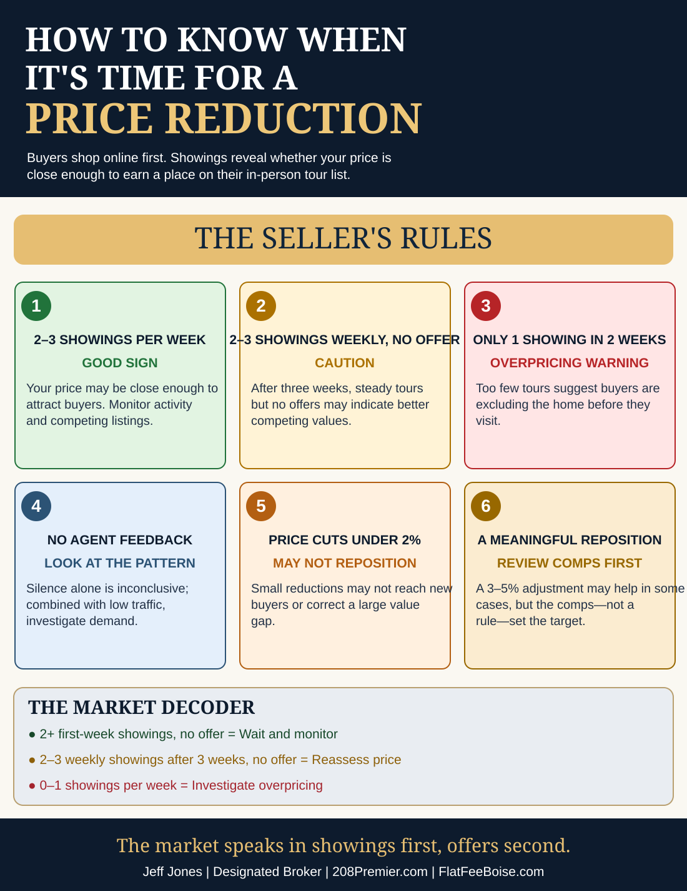

Seller's Advantage · From the Broker's Desk · October 31, 2026
When to Reduce Your Home's Listing Price: 6 Warning Signs
By Jeff Jones, Designated Broker
Before a buyer makes an offer, your home first has to earn a spot on that buyer's tour list. One of the most valuable early indicators of competitive pricing is the number of scheduled private showings.
Buyers compare homes online and often eliminate properties by perceived value before visiting. If your home receives far fewer tours than similar homes, it's time to examine whether pricing, presentation, accessibility or a location objection is holding it back.

Two or more showings in the first week: monitor
Two or three serious private showings in the first week can mean the home is making buyer tour lists. That is encouraging, not a promise of an offer. Compare the result with similarly priced active listings and local market pace.
Regular showings without offers: reassess value
If two or three people tour the property each week for three weeks without an offer, buyers may like features of the home but find stronger value elsewhere. Look at the competing homes they chose, disclosure concerns, condition and price.
One showing in two weeks: investigate quickly
A home that earns only one showing in fourteen days may be eliminated online before buyers tour. Check search visibility, photo quality, access restrictions, seasonality and comparables before deciding that the price alone is responsible.
Why buyers don't simply offer $40,000 less
Buyers sometimes make substantial below-list offers, but many assume a seller asking far above their estimate will not negotiate to fair value in one step. They may spend their time with properties they consider more realistically priced.
Silence from buyer agents is not a valuation
An unanswered feedback request may mean the agent is busy, the buyer moved on, or the home was rejected. Treat silence as one weak signal, never definitive proof. The stronger evidence is actual tour, return-visit and offer activity.
Why a small price cut may not work
A $15,000 reduction on a $700,000 home is about 2.1%. That can be substantial in dollars while still leaving the home outside many buyers' budgets or perceived value range. Compare your proposed new price with the homes buyers will see beside yours.
Price according to competition, not a formula
A 3–5% reduction sometimes changes online search exposure and buyer expectations. It is not automatically the correct amount. Price based on recent comparable sales, active competition, specific location drawbacks, market movement and the seller's objectives.
Open houses and the spring relisting myth
An open house can introduce a listing, especially during launch weekend or after meaningful repositioning, but attendance includes casual visitors. Later private appointments and offers may tell you more. Taking a listing off the market until spring may bring more buyers but also more competing homes and does not erase the prior price history.
Set the review rules before listing
Agree in advance to review showings after week one and again at two to three weeks. Watch the competing listings, new contracts, price per square foot, buyers' objections and marketing reach. Those observations help distinguish between a market that needs time and a listing that needs repositioning.
The market speaks in showings first, offers second.
Broker's note: Showing frequencies and percentage reductions are rules of thumb, not universal market statistics. Results depend on property type, season, location, competition and showing access. A price reduction is never guaranteed to produce an offer.
Need help interpreting your buyer response? Explore 208 Premier seller services.